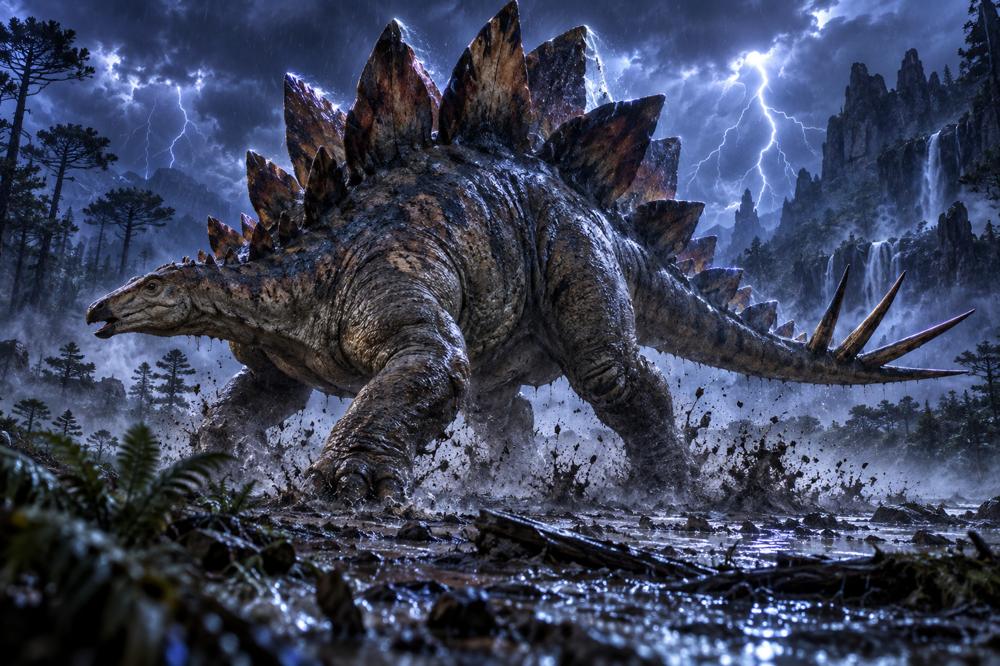

12 Hewan Purba Paling Ikonik
Dunkleosteus

Era Devon Akhir
382-358 mya
Dunkleosteus adalah ikan berzirah raksasa yang menjadi salah satu predator laut paling menakutkan pada zamannya. Bagian kepalanya dilindungi lempeng tulang tebal, sementara rahangnya bekerja seperti bilah tajam untuk menghancurkan mangsa.
Tiktaalik

Era Devon Akhir
375 mya
Tiktaalik merupakan salah satu fosil transisi paling terkenal antara ikan bersirip cuping dan vertebrata berkaki awal. Hewan ini memiliki leher, tengkorak pipih, serta struktur sirip yang menunjukkan tahap awal perkembangan tungkai.
Dimetrodon

Era Perm Awal
292-272 mya
Dimetrodon dikenal dari layar besar yang membentang di sepanjang punggungnya. Meski sering disangka dinosaurus, hewan ini sebenarnya termasuk synapsida dan secara evolusioner lebih dekat dengan garis keturunan mamalia.
Coelophysis

Era Trias Akhir
216-203 mya
Coelophysis adalah salah satu dinosaurus predator awal yang paling dikenal. Tubuhnya ramping, ringan, dan ditopang oleh dua kaki kuat, membuatnya menjadi pemburu yang lincah di lingkungan Trias.
Stegosaurus

Era Jura Akhir
155-150 mya
Stegosaurus adalah dinosaurus herbivora yang terkenal dengan dua baris lempeng besar di punggungnya. Ujung ekornya dilengkapi duri panjang yang kemungkinan digunakan untuk mempertahankan diri dari predator.
Brachiosaurus

Era Devon Akhir
382-358 mya
Brachiosaurus merupakan sauropoda raksasa dengan leher sangat panjang dan kaki depan yang lebih tinggi daripada kaki belakang. Bentuk tubuh ini memungkinkannya menjangkau vegetasi tinggi yang sulit dicapai herbivora lain.
Allosaurus

Era Jura Akhir
155-145 mya
Allosaurus adalah salah satu predator besar utama pada periode Jura. Dinosaurus ini memiliki tengkorak besar, gigi tajam, lengan bercakar, dan tubuh yang dirancang untuk memburu hewan besar.
Spinosaurus

Era Kapur Akhir
100-94 mya
Spinosaurus adalah theropoda besar dengan moncong panjang menyerupai buaya dan layar mencolok di punggungnya. Berbagai ciri tubuhnya menunjukkan bahwa hewan ini memiliki adaptasi kuat untuk hidup dan berburu di lingkungan perairan.
Triceraptops

Era Kapur Akhir
68-66 mya
Triceratops adalah dinosaurus herbivora besar yang mudah dikenali dari tiga tanduk di wajah dan perisai tulang besar di belakang kepalanya. Hewan ini hidup pada masa-masa terakhir sebelum kepunahan dinosaurus non-unggas.
Tryannosaurus Rex

Era Kapur Akhir
68-66 mya
Tyrannosaurus rex adalah salah satu predator darat paling terkenal sepanjang sejarah. Hewan ini memiliki tengkorak sangat besar, kaki belakang yang kuat, gigi tebal, dan gigitan yang mampu menghasilkan tekanan luar biasa besar.
Smilodon

Era Pleistosen
2,5 jt-10rb mya
Smilodon adalah kucing bertaring pedang yang hidup pada Zaman Es. Tubuhnya sangat berotot dan memiliki sepasang taring atas panjang yang menjadi ciri paling khas dari predator ini.
Mammuthus Primigenius

Era Pleistosen hingga Holosen Awal
400rb-4rb mya
Mammuthus primigenius atau mammoth berbulu adalah salah satu mamalia Zaman Es paling ikonik. Hewan ini memiliki bulu tebal, tubuh besar, serta gading panjang melengkung yang membantunya bertahan di lingkungan dingin.